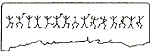
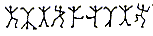
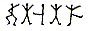
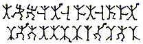
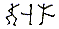

Les hommes dansants
Holmes ramassa le papier et l'exposa à la lumière du soleil. La page était arrachée d'un carnet. Les dessins étaient faits au crayon et se déroulaient de la façon suivante :

[...]
Il déplia un papier qu'il étendit sur la table. Voici la réplique des hiéroglyphes :

- Excellent! s'exclama Holmes. Excellent! Je vous en prie, poursuivez.
- Lorsque j'eus terminé, j'effaçai les marques, mais, deux matinées plus tard, une nouvelle inscription était apparue. En voici la copie :
- Trois jours plus tard, un message griffonné sur du papier était glissé sous un caillou sur le cadran solaire. Le voici. Les dessins, comme vous le constatez, sont exactement les mêmes que sur le précédent. [...] En effet, la même configuration de figurines dansantes apparue à deux reprises et que j'avais déjà recopiée se trouvait sur la porte. J'inspectai les alentours sans découvrir la moindre trace de cet homme. Et pourtant, si incroyable que cela paraisse, il avait dû être là tout le temps puisque, lorsque j'examinai de nouveau la porte le lendemain matin, il avait griffonné d'autres dessins sous la ligne que j'avais déjà vue. - Avez-vous ce nouveau dessin?
- Oui, il est très bref mais j'en ai fait une copie que voici. Il produisit une feuille. La nouvelle sarabande avait cet aspect :
[...]
Le soir du second jour arriva une lettre de Hilton Cubitt. De son côté, tout était calme à l'exception d'une longue inscription apparue le matin même sur le socle du cadran solaire. Il nous en envoyait une copie dont voici la reproduction :

Nous retrouvons Sherlock Holmes alors qu'il explique comment il a fait pour déchiffrer ces étranges messages :
- Lorsque j'eus terminé, j'effaçai les marques, mais, deux matinées plus tard, une nouvelle inscription était apparue. En voici la copie :
- Trois jours plus tard, un message griffonné sur du papier était glissé sous un caillou sur le cadran solaire. Le voici. Les dessins, comme vous le constatez, sont exactement les mêmes que sur le précédent. [...] En effet, la même configuration de figurines dansantes apparue à deux reprises et que j'avais déjà recopiée se trouvait sur la porte. J'inspectai les alentours sans découvrir la moindre trace de cet homme. Et pourtant, si incroyable que cela paraisse, il avait dû être là tout le temps puisque, lorsque j'examinai de nouveau la porte le lendemain matin, il avait griffonné d'autres dessins sous la ligne que j'avais déjà vue. - Avez-vous ce nouveau dessin?
- Oui, il est très bref mais j'en ai fait une copie que voici. Il produisit une feuille. La nouvelle sarabande avait cet aspect :
Après avoir toutefois admis que les symboles représentaient des lettres et appliqué les règles qui nous guident dans toute forme d'alphabet secret, la solution était assez simple. Le premier message à m'être soumis était si court qu'il m'était impossible de faire plus que de dire avec quelque assurance que le symbole représentait un E. Comme vous le savez, E est la lettre la plus commune de l'alphabet anglais et elle domine avec une fréquence si manifeste que, même dans une phrase courte, on peut s'attendre à la trouver plusieurs fois. Des quinze symboles du premier message, quatre étaient identiques, il était donc raisonnable de l'identifier comme le E. Il est vrai que, dans quelques cas, la silhouette portait un drapeau et, en d'autres, non, mais il était probable , à la façon dont les drapeaux étaient répartis, qu'ils servaient à couper la phrase en mots. J'ai admis cela comme hypothèse de travail et j'ai considéré que le E était représenté par .
C'est ici qu'intervient la véritable difficulté de l'affaire. L'ordre des lettres anglaises après le E n'est pas très bien marqué et la prépondérance que l'on peut démontrer dans un texte moyen peut être inversée dans une phrase courte. Approximativement, T, A, O, I, N, S, H, R, D et L est l'ordre numérique d'apparition des lettres; mais T, A, O et I sont presque au même rang et il serait parfaitement vain d'essayer chaque combinaison jusqu'à un résultat significatif. J'ai donc attendu du matériel nouveau. Au cours de notre seconde entrevue, Mr. Hilton Cubitt fut en mesure de m'apporter deux autres phrases brèves et un message qui semblait -étant donné l'absence de drapeau - n'être constitué que d'un seul mot. Voici les symboles. Dans le mot seul, j'avais déjà deux E, en deuxième et quatrième position, dans un mot de 5 lettres. Cela pouvait être "sever", "lever" ou "never". Qu'il s'agisse d'une réponse à une demande est de loin le plus probable, nous ne pouvons pas en douter. Les circonstances le désignaient par ailleurs comme une réponse écrite par la femme. Partant de ce postulat, nous sommes à présent en mesure de dire que les symboles  représentent respectivement les lettres N, V et R.
J'avais encore des difficultés considérables à résoudre mais une réflexion heureuse me mit en possession de plusieurs autres lettres. Je me suis dit que si ces appels émanaient, comme je le supposais, d'une personne proche de la jeune femme dans le passé, une combinaison qui contenait deux E avec trois lettres d'intervalle pouvait très bien signifier "ELSIE". A l'examen, je décrouvais qu'une telle combinaison constituait la fin du message répété à trois reprises. C'était certainement un appel à Elsie. Dans ce cas, j'avais mes L, S et I. Mais de quel genre d'appel pouvait-il s'agir? Il n'y avait que quatre lettres dans le mot qui précédait "Elsie" et il se terminait par un E. Il s'agissait sûrement du mot "COME". J'ai essayé toutes les autres combinaisons de quatre lettres terminant par E mais aucune ne correspondait. J'étais alors en possession du C, du O et du M, et je pouvais m'attaquer de nouveau au premier message, le divisant en mots et laissant des points pour chaque symbole encore inconnu. Traité de cette façon, il apparut ainsi :
Voici un bel exemple de déchiffrement d'un message avec une pointe d'analyse statistique des fréquences, et une dose de réflexion sur le sens des mots. On pourra aussi retenir de cette nouvelle ce petit échange instructif entre le mécréant démasqué et Holmes :
- .M .ERE ..E SL.NE.
- AM HERE A.E SLANE.
- AM HERE ABE SLANEY
- A. ELRI.ES
- ELSIE .RE.ARE TO MEET THY GO.
- Vous l'avez écrit? Personne sur terre en dehors du Joint ne connaît le secret des farandoles. Comment avez-vous pu l'écrire?
- Ce qu'un homme est capable d'inventer, un autre est capable de le découvrir, déclara Holmes.
Pour finir, donnons le tableau de correspondance utilisé :
- Ce qu'un homme est capable d'inventer, un autre est capable de le découvrir, déclara Holmes.
Consulter aussi